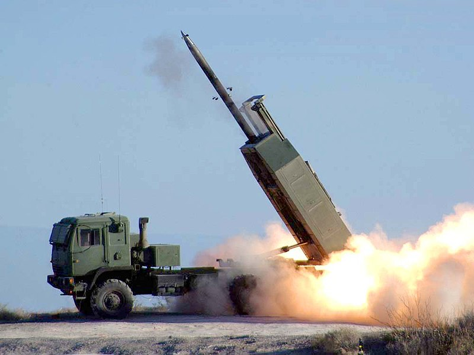
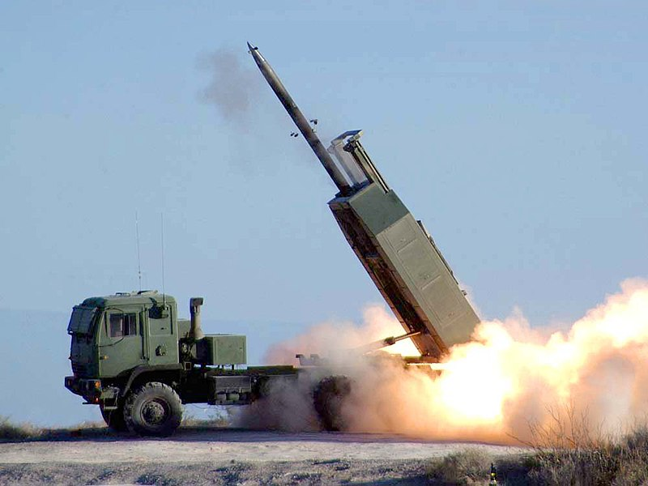
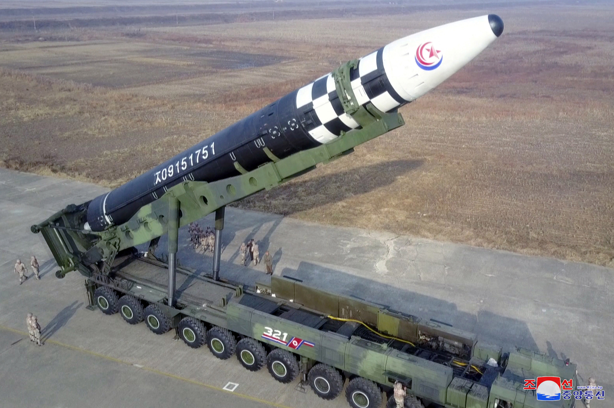
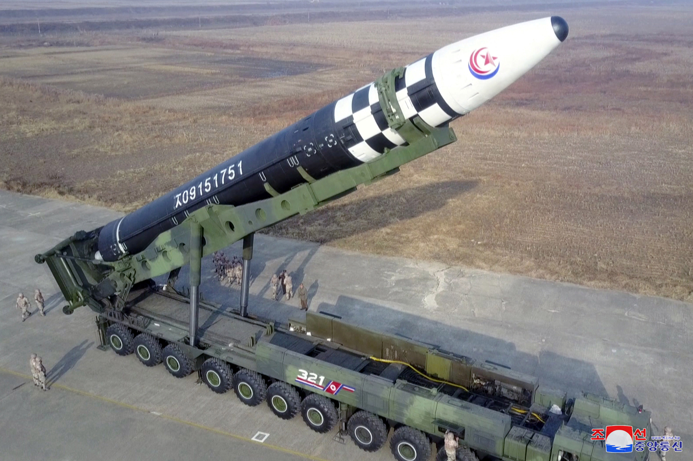

Modern and Atomic era Weaponry
WW1 and WW2 Era Guns
After muskets, there were bolt-action rifles, being able to fire multiple shots before reloading, however, they would need to pull a bolt handles to re-engage the rifle to fire again. The rifles could typically only store 5-6 bullets every reload. These were widely used in WW1 and WW2 by most infantrry divisions, but there are some others. There were semi-automatic rifles, those that don't need to pull a bolt handle after every shot, submachine guns, guns that fire rapidly, with 30-50 bullet magazines, machine guns, gun that unleash a storm of bullets, storing about 100-200 bullets per magazine.
Tanks
First invented during WW1 by the British, the first tank was named, "Little Willie". First presented and constructed for the military by William Foster & Co., during August and September 1916. Tanks are heavily armoured vehicles, equipped with mostly tracks, sometimes wheels, and usually contains a large cannon on the turret part of the tank, and some other types of weaponry, like machine guns. Since early WW1 tanks, like the British Mark I, the first tank to be ever deployed or the French Renault FT, the first modern tank with a fully rotating turret, tanks have evolved much, from WW2 marvels, like the Soviet T-34s, German Panther and Tiger tanks, and American M4 Sherman tanks, to much more modern tanks tag at we recognise today, like the German Leopard II tank, the British Challenger II tank and the state-of-the-art M1A4 Abrams and South-Korean K2 Black Panthers.
Modern Artillery
During WW1, their artilleries were still similar to Napoleonic Era artillery. However, during WW2, a lot has changed. There were now different types of artilleries, like rocket, howitzers, heavy, field, mortars and more. Rocket artillery is a system that shoot rockets, sometimes guided rockets, carrying warheads over long distances, and unlike traditional artillery, these shoot in barrages, instead of individually. Howitzers are flexible pieces of artillery, capable of shooting at high or low angles, depending on situation. Heavy artilleries are large-caliber artilleries, specifically designed for long-range shelling and bombing fortified positions or heavily armoured targets, like tanks or bunkers. Field artilleries are highly mobile pieces, are designed to support infantry and armoured units and were to be used on the front lines, unlike the previous. Mortars were much smaller, hand-held pieces, designed to lob explosives over obstacles or from trenches. They were portable and usually operated by small teams, making them highly mobile and effective for providing closer firing support for units on the front-line.
Submarines
The submarine was first imagined by a British mathematician, called William Bourne, in 1578, but the first sub ever built was by a Dutch inventor, named Cornelis Drebbel, which submarine dove under the River Thames in 1620. Submarine are water vehicles, designed to be submerged underwater for long periods of time, staying hidden for longer. One of the most famous uses were during WW1 and WW2, where Germany used its Unterseeboat, or U-Boats for short, to harass and destroy enemy naval vessels and trade ships, like trying to overccomethe British naval blockade during WW1 and sinking American trade vessels supplying Britian during WW2.
Planes
Everyone knows the invention of the plane, the Wright Brothers in 1903, inventing the first biplane in the world. However, planes were first used for warfare during 1911, during a war between Italians and the Turks. Planes for warfare were split into two main groups, fighters and bombers. Fighters were used to attack enemy planes, equipped with specialised guns on the plane to shoot down a plane. Bombers were used to drop heavy payloads onto enemy target, on the ground or the sea, but often needed the protection of fighters to defend against enemy fighters. One of the best and effective pilots in WW1 was Baron von Richthofen, more commonly known as “The Red Baron”, with 80 credited aerial victories. Then, between world wars, the monoplane was invented, the plane we know today. During WW2, the air forces of countries dramatically increased, with the infamous German Luftwaffe, the most powerful and sophisticated air-force at the time. Famous for being crucial for the Bliztkrieg tactic and the constant bombings during Battle of Britain in the skies. Now, in modern day, planes are becoming more sophisticated than ever, air-to-air missiles, reaching Mach. 10 or more, stealth designs to hide from radars and more.
Nukes and ICBMs
The nuclear bomb was invented in the United States of America, completing their Manhattan Project. The bomb was invented during WW2, on the 6 August 1945. Robert J. Oppenheimer is widely known as the "Father of the Atomic Bomb"They are two types of atomic bombs, nuclear bombs and hydrogen bombs. The nuclear bomb works through fission, where multiple atoms are shot at each other at high speeds. The hydrogen bomb works through fission and fusion, the combining of atoms. The nuclear bomb is deadly, able to damage the site of explosion for years through radiation. However, the hydrogen bomb does not spread radiation bit instead is a much, much more powerful bomb than a nuke, some even capable of being 1000x stronger than the ones dropped on Hiroshima and Nagasaki. ICBM, short for Intercontinental Ballistic Missile, are capable of reaching insane speeds of around Mach. 20, twenty times the speed of sound, with some even able to go around Earth in less than 30 minutes, and to deliver a devastating payload, able to be equipped with a nuclear warhead.
 


 
